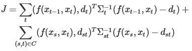

実装(退化・ループ閉じ込み)
退化
退化は環境形状が単純な時に生じやすくなる。例えば、廊下などの平行線ではスキャンマッチングを点群データからでは分からず退化が起こる。そのため、退化への対策を講じる必要がある。そのための有効な手法として別のセンサを用いる方法がある。移動ロボットｐにおいて最も一般的なのはオドメトリを併用することが挙げられる。このように、複数のセンサ情報を組み合わせることを「センサ融合」と言う。
 センサ融合は一言でいうと「複数センサによる推定値の平均をとる」こと。その際、センサデータの信頼性に基づいた重みを付けて平均を取る。下の図ではスキャンマッチングの推定値の分布とオドメトリの推定値の分布を表している。レーザスキャナには2枚の壁しか見えないので、スキャンマッチングによるロボット位置の推定値は図の様に長い分布になる。一方、オドメトリの推定値は小さな楕円に収まる。この二つの推定値を融合すると黒丸の位置に推定値が得られる。これは両者の分布による「重み」に応じて配分された位置である。
センサ融合は一言でいうと「複数センサによる推定値の平均をとる」こと。その際、センサデータの信頼性に基づいた重みを付けて平均を取る。下の図ではスキャンマッチングの推定値の分布とオドメトリの推定値の分布を表している。レーザスキャナには2枚の壁しか見えないので、スキャンマッチングによるロボット位置の推定値は図の様に長い分布になる。一方、オドメトリの推定値は小さな楕円に収まる。この二つの推定値を融合すると黒丸の位置に推定値が得られる。これは両者の分布による「重み」に応じて配分された位置である。
重みとして良く用いられるのは共分散である。共分散はデータや推定値のばらつき具合を示す値で、任意の確率分布で定義できるが、ここでは正規分布を用いる。正規分布は多くの誤差分布に当てはまり、しかも平均と共分散の2つのパラメータだけで表現できるので計算がしやすい。
 正規分布は下記の式により融合できる。では、それぞれの共分散の計算方法について述べる。
正規分布は下記の式により融合できる。では、それぞれの共分散の計算方法について述べる。

スキャンマッチングの共分散の計算方法はいくつか提案されているが、今回はラプラス近似に基づく方法を採用する。ラプラス近似は確率密度関数の最大値付近の形状を正規分布で近似する方法。
これをICPに適応するには、ICPのコスト関数の極小値におけるヘッセ行列を求める必要がある。これには二つの事に気を付ける。
共分散行列の対角成分だけを計算し、他の成分は０とする。対角成分は並進成分と回転成分の分散を表す。
図01 退化
重みとして良く用いられるのは共分散である。共分散はデータや推定値のばらつき具合を示す値で、任意の確率分布で定義できるが、ここでは正規分布を用いる。正規分布は多くの誤差分布に当てはまり、しかも平均と共分散の2つのパラメータだけで表現できるので計算がしやすい。
図02 センサ融合
スキャンマッチングによるロボット位置の共分散
スキャンマッチングにおける共分散は、マッチングの不確実性を表します。多次元の場合、ある軸では不確実性が大きく、別の軸では小さいということがある。廊下などの長い通路での退化がその一例である。スキャンマッチングの共分散の計算方法はいくつか提案されているが、今回はラプラス近似に基づく方法を採用する。ラプラス近似は確率密度関数の最大値付近の形状を正規分布で近似する方法。
- 極小値x_0を平均とする
- 極小値x_0におけるヘッセ行列の逆行列の定数倍を共分散とする
これをICPに適応するには、ICPのコスト関数の極小値におけるヘッセ行列を求める必要がある。これには二つの事に気を付ける。
-
点の対応付けの曖昧性をどう扱うか？
対応付けの曖昧さは計算に反映されない。点間距離によるコスト関数ではそれが間違いでも共分散が小さくなってしまう。対策としては垂直距離を用いることがあり、これだと環境が滑らかならば大きく変わらない。 -
計算が複雑である
ヘッセ行列は多変数関数の２次微分であり、そのため計算が複雑である。そこで、ヘッセ行列の直接計算を回避するために、ガウス-ニュートン近似を用いる。これはヘッセ行列Hをヤコビ行列Jの積で表すもので、極地の近傍で成り立つ。
オドメトリによるロボット位置の共分散
オドメトリの共分散の計算には速度運動モデルがよく用いられる。ただし、今回は簡単のために手軽な手法を用いる。共分散行列の対角成分だけを計算し、他の成分は０とする。対角成分は並進成分と回転成分の分散を表す。
ループ閉じ込み
ループ閉じ込み
ループ閉じ込みとは、周回して同じ場所に戻ったことを検出して、その位置を合わせてループを閉じるようにすることである。SLAMの累積誤差を減らすことが出来る。ループ閉じ込みは以下の手順で行う。
-
ループ検出
再訪点(それまでの走行の中で音連れた領域の中で、現在位置に相当する点)に来たことを検出する。スキャンマッチングを行い、前回訪問時のロボット位置V0、現在のロボット位置V1との相対位置からマッチングさせる。 -
ポーズ調整
検出された再訪点を通るようにロボット軌跡を修正する。これをポーズ調整と言い、ポーズグラフの持つ残差が最小化するように最適化することで実現できる。 -
地図の修正
ポーズ調整で修正されたロボット軌跡に沿って、地図の点群を再配置する。
ポーズ調整
ポーズグラフとは、ロボット軌跡をグラフ構造で表したもので、ロボット位置を頂点、ロボット位置間の相対位置を辺で表す。辺にはオドメトリ辺とループ辺があり、オドメトリ辺は時刻t-1からtまでの移動量を示し、ループ辺はループ検出時に生成される辺で、時間的に離れた頂点間を結ぶ。
図03 ポーズグラフの例
ポーズグラフの最適化
ポーズ調整は次のように定式化されます。
x_t: 時刻tのロボット位置
f(a, b): ロボット位置a, bの相対位置を求める
d_t: x_t-1, x_tの間の辺の拘束
C: ループ辺の集合
d_st: x_s, x_tの間の辺の拘束
\Sigma_t: d_tの共分散
\Sigma_st: d_stの誤差共分散
この式は、辺の両頂点の相対位置屠蘇の拘束との二乗距離の和になっており、共分散による重みがついている。これは辺の拘束と頂点のずれを表しており、Jが小さいほどずれが小さく、ポーズグラフの整合性が取れているといえる。
この最小化は非線形最小二乗問題であり、ガウス-ニュートン法やレーベンバーグ-マーカート法を用いて説くことになります。
部分地図の導入
ループ検出をするために、地図表現を工夫する。これまでは、地図の点群を１つのコンテナ格子テーブルに格納していたが、それでは次の問題が発生する。
- 処理時間がかかる
- 検出誤りが増える
- 地図の歪みによる重複部分でのマッチング
図04 部分地図の例
ループ検出
ループ検出ではロボットが同じ場所に戻ってきたことを検出して再訪点をみつけ、ポーズグラフにループ辺を追加する。まず、再訪点候補を求める。これは現在位置から一定の範囲内の点を再訪点の候補とする。次に、現在位置から一番近い点を再訪点候補として絞り込む。最後に、周囲形状と現在スキャンとでスキャンマッチングを行って再訪点の位置を確定する。
地図の修正
ポーズ調整で新しいロボット位置が求まれば、それに沿って点群を再配置することで地図が修正される。ここで問題となるのは地図を構成する点はもはやスキャン点ではなく、複数のスキャン点の代表であること(格子テーブルによる点の削減を行ったため)がある。そこで、格子テーブルに登録する点にはスキャン番号をつけておく。
まとめ
ここまでの流れを用いることで退化・ループ閉じ込みが組み込まれ、2D-SLAMプログラムが完成した。しかし、実世界では実に様々なことが起こる。例えば、確率分布に従わない誤差・車輪のスリップ・大量の移動障害物などがある。
実世界は多様であり、このようなことが当たり前に起こる。SLAMは地図と自己位置推定が相互に依存するため不安定性が増大しやすい性質を持つ。しかし、多様な実世界でロバスト性を実現するのは非常に面白い課題でしょう。
実世界は多様であり、このようなことが当たり前に起こる。SLAMは地図と自己位置推定が相互に依存するため不安定性が増大しやすい性質を持つ。しかし、多様な実世界でロバスト性を実現するのは非常に面白い課題でしょう。
――――SLAM入門